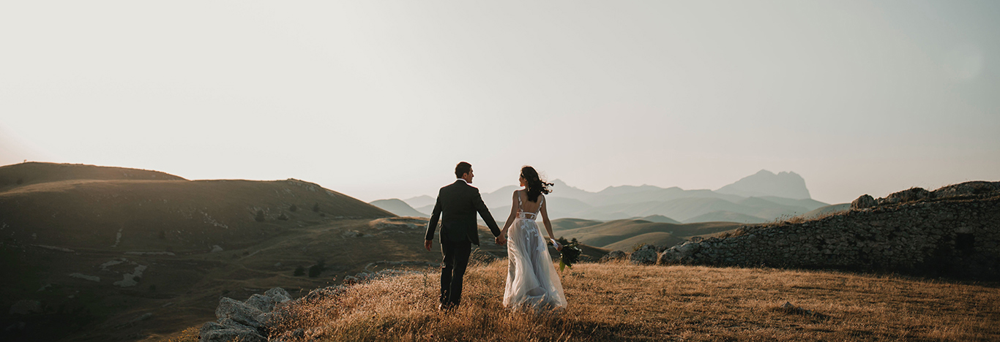

Vista Photography
What I do!
Hello! My name is Caleb Hall and I’m a freelance photographer and videographer based in the scorching city of Phoenix, Arizona. I have been professionally capturing images and videos for my client’s special occasions for over 20 years. I specialize in portraiture and event photography/videography (includes weddings). Please contact me if you have any questions!
Testimonials
Caleb was wonderful to work with and the pictures came out absolutely
perfect! If anyone I know needs a photographer I will definitely be
recommending him. Thank you so much for capturing lifelong memories on
my special day!
- Maddie Simon
Caleb was communicative, professional, and the photos he captured were
amazing. Will be contacting him if I ever need any photo work again.
-
Jorge Simpson
I needed a videographer for my daughter’s quinceanera and a friend of
mine recommended Caleb. I’m so glad they did, the video was exactly
what I was hoping for. Thank you, Caleb!
- Mariana Freeks
I needed graduation pictures for my daughter and I heard of Jessica
through some friends. She answered all of my questions and was so
patient! The pictures she took were what I was looking for. Will be
recommending her to family and friends.
- Melvin Garcia